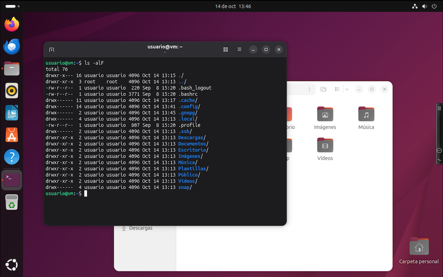
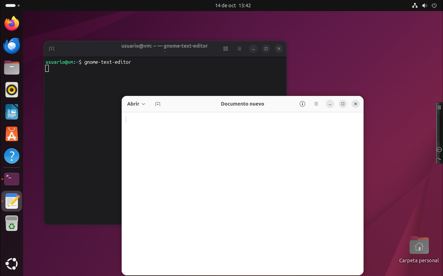
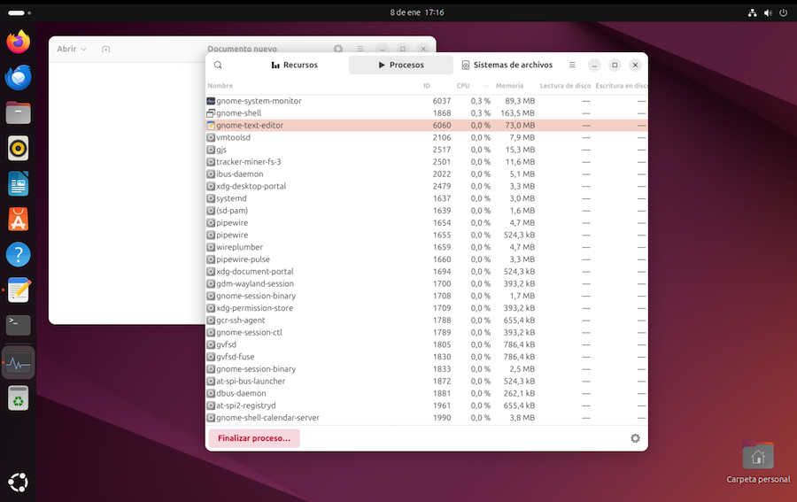

Terminal de comandos¶
Ya hemos visto que los sistemas operativos modernos suelen incluir un programa llamado "Terminal", que emula un shell de texto y permite trabajar introduciendo comandos para ejecutar programas y realizar operaciones de administración del sistema:

쯇ara que sirven los comandos? Seamos realistas. Muchos usuarios prescindirán de esta herramienta. Si lo que pretendemos es utilizar el ordenador solo para navegar por Internet, editar documentos, o guardar nuestras fotos, todas estas actividades se manejan mejor pulsando sobre un icono, en lugar de tener que interaccionar con la computadora al estilo prehistórico, tecleando comandos.
Sin embargo, el valor real del terminal se pone de manifiesto en la administración y configuración del equipo. Algunas actividades administrativas cuentan con más opciones usando comandos, y hay operaciones que requieren de su uso. Para un usuario avanzado, los comandos dan acceso a un mundo lleno de posibilidades.
Veamos un ejemplo. Supongamos que queremos instalar el conocido reproductor de video VLC. Ubuntu cuenta con un programa llamado App Center, para gestionar la descarga e instalación de software. Haciendo uso del mismo, podemos buscar el programa en cuestión, seleccionarlo, y pulsar en el botón Instalar:

Como alternativa, podemos hacer la misma tarea abriendo la ventana del Terminal y tecleando un comando que depende de nuestra distribución. En sistemas tipo Debian, como por ejemplo Ubuntu:
$ sudo apt install vlc
Y en sistemas derivados de Red Hat, como es el caso de Fedora:
$ sudo dnf install vlc
Lo que en el primer caso significa:
- la palabra sudo se antepone a todo comando que requiera ser ejecutado con permisos especiales. Se nos pedirá nuestra contraseña. Es la abreviatura de "super user do."
- el comando a ejecutar es apt, abreviatura de Advanced package tool. Es el nombre del programa usado por algunas distribuciones para instalar software.
installes la operación a realizar.vlces el programa a instalar.
Al pulsar la tecla Enter, se ejecutará todo el proceso de descarga e instalación de forma automática. La ventana del Terminal se llenará de mensajes, informando sobre el proceso de descarga, y ejecutando todo el proceso automáticamente.
A la vista de esto, se diría que el programa de escritorio es más cómodo, ya que no hay necesidad de tener que teclear comandos. Pero, 쯤ue pasa si periódicamente queremos hacer limpieza de nuestro equipo y reinstalar una veintena de nuestras aplicaciones favoritas? La tarea de instalación una por una puede resultar pesada.
En su lugar, podemos crear un archivo de texto que contenga comandos de instalación:
apt install vlc
apt install otro_programa
apt install otro_programa_2
lo llamamos instalar, por ejemplo, y lo ejecutamos con el comando:
$ sudo instalar
Ejecutando este script de comandos como si fuera un programa, todas las instalaciones se llevarán a cabo de forma automatizada.
Iniciando el terminal¶
El terminal de comandos es un programa que suele estar presente en todas las distribuciones Linux. Cada una tiene su propio terminal, pero básicamente todos funcionan de forma similar. En el caso de Gnome, el programa se llama tal cual, Terminal de Gnome. Ver página web
Lo primero que veremos es una línea de texto que muestra cierta información seguida de un símbolo $. Suele ser algo así como:
usuario@maquina:carpeta $
A esto se le llama prompt. Termina con un carácter $, tras el cual, el cursor parpadeante nos invita a teclear algún comando.
En el ejemplo, se muestra:
usuario@vm:~$
Durante el proceso de instalación del sistema, al usuario le he llamado tal cual, "usuario", y a la máquina virtual la he denominado "vm". El símbolo ~ es un alias que representa la carpeta principal del usuario. En este ejemplo, ~ equivale a /home/usuario. En todo momento, el prompt muestra cual es la carpeta de trabajo. Finalmente se muestra el símbolo $.
Ejecutando programas¶
En principio, los programas se ponen en marcha tecleando su nombre y pulsando Enter. Por ejemplo, el editor de textos suministrado por el escritorio Gnome se llama gnome-text-editor:
$ gnome-text-editor
Nota: en el texto de estos ejemplos mostramos el prompt $, pero no es algo que tengamos que teclear.
Tras introducir el comando, se abre el editor en una nueva ventana, que convivirá con la del Terminal:

Siempre que pongamos en marcha un programa mediante un comando, el terminal se queda a la espera de que finalice y cierre su ventana, tras lo cual, se recupera el prompt para introducir más comandos. Podemos evitar este bloqueo añadiendo un carácter & al comando:
$ gnome-text-editor &
Esto hace que la ejecución del editor sea en paralelo a la del terminal, de forma que este recupere el prompt inmediatamente.
Una ventaja de ejecutar programas desde el terminal de comandos es la posibilidad de pasarle información adicional:
$ gnome-text-editor /home/usuario/documentos/miArchivo.txt
En este ejemplo, al editor le pasamos como argumento el nombre del fichero a editar. Los argumentos añadidos nos permiten personalizar la ejecución del programa. Otro beneficio del terminal es que visualizaremos los posibles mensajes de error en la consola, que sin ella, no serían visibles.
쮺omo averiguar cual es el nombre de cada programa? Hay varias formas. Una de ellas es mantenerlo en ejecución y poner en marcha otro programa que se llama "Monitor del Sistema". En la pestaña "procesos" tenemos los nombres de los programas que están ejecutándose y su consumo de recursos:

Programas de consola¶
Los programas más sencillos son aquellos que se ejecutan en la misma ventana del terminal, mostrando alguna información. Por ejemplo, si introducimos el comando:
$ date
dom 13 mar 2022 15:34:15 CET
vemos que, al ejecutarse, muestra la fecha y hora del sistema, y seguidamente recupera el prompt.
Errores¶
Si tecleamos mal un comando, se mostrará un mensaje de error:
$ gkghj
Orden «gkghj» no encontrada
UNIX distingue entre mayúsculas y minúsculas. Un comando, un nombre de archivo, de directorio o cualquier otra cosa donde no respetemos el uso de las letras, no será reconocido y lo más probable es que obtengamos un mensaje de error. Por ejemplo, si escribimos el comando date con la primera letra en mayúsculas, obtenemos:
$ Date
Orden «Date» no encontrada
Algunos sistemas son suficientemente inteligentes como para sugerirnos opciones:
~$ Date
Orden «Date» no encontrada. Quizá quiso decir:
la orden «kate» del paquete snap «kate (23.08.4)»
la orden «date» del paquete deb «coreutils (9.4-3.1ubuntu1)»
la orden «late» del paquete deb «late (0.1.0-14)»
la orden «kate» del paquete deb «kate (4:24.08.1-0ubuntu1)»
Programas no instalados¶
La mayoría de comandos son en realidad pequeños programas. Los repositorios de las distribuciones son enormes, y es materialmente imposible que lo tengamos todo instalado en nuestra computadora.
Es posible que alguno de los ejemplos que aquí se muestran sean programas que no vienen de serie con Ubuntu. Por ejemplo, el editor de textos "kate":
$ kate
No se ha encontrado la orden «kate», pero se puede instalar con:
sudo snap install kate # version 23.08.4, or
sudo apt install kate # version 4:24.08.1-0ubuntu1
Si nos interesa ese programa, podemos hacer caso de la recomendación y ejecutar alguno de esos comandos.
Cerrar sesión interactiva¶
Podemos cerrar el terminal como cualquier otra ventana. También podemos hacerlo introduciendo el comando:
$ exit
Uso del ratón¶
Las antiguas consolas de texto funcionaban solo con el teclado. Las emulaciones de terminal contemplan el uso del ratón para poder seleccionar texto y realizar operaciones de cortar y pegar, pero no podemos utilizarlo para mover el cursor. Para desplazarnos en la edición de un comando tenemos que utilizar las teclas Left y Right.
Historial de comandos¶
Siempre que ejecutamos un comando, el terminal lo recuerda y mantiene un registro de los últimos comandos introducidos. Pulsando Up y Down, podemos recuperar comandos ejecutados, navegando hacia arriba y hacia abajo en la lista, siendo el punto de partida el comando más reciente. Una vez que recuperemos el comando deseado, podemos editarlo y ejecutarlo de nuevo pulsando Enter.
Uso del teclado¶
Dependiendo de la configuración de nuestro sistema, podemos tener otras combinaciones de teclas adicionales. Para mover el cursor:
- Ctrl+A va al inicio de la línea.
- Ctrl+E va al final de la línea.
- Ctrl+B mueve el cursor un carácter a la izquierda. Equivale a Left.
- Ctrl+F mueve el cursor un carácter a la derecha. Equivale a Right.
- Alt+B mueve el cursor una palabra a la izquierda.
- Alt+F mueve el cursor una palabra a la derecha.
Para borrar texto:
- Ctrl+D borra el carácter bajo el cursor. Equivale a Del.
- Ctrl+H borra el carácter a la izquierda de cursor. Equivale a Backspace.
- Ctrl+U borra todo el texto a la izquierda del cursor.
- Ctrl+K borra todo el texto tras el cursor.
- Alt+Backspace borra palabra a la izquierda
- Ctrl+W borra palabra a la derecha
- Ctrl+_ deshacer
Terminal y shell¶
Podría pensarse que la aplicación Terminal sirve para introducir comandos, pero en realidad no es así. Lo que hace es simular una consola, y en ella se pueden ejecutar cualquier programa en formato de consola. El programa que permite introducir comandos y ejecutarlos se llama shell.
Por lo tanto, cuando introducimos un comando, tenemos dos programas en ejecución, el Terminal y el Shell. El primero establece el tipo de letra, maneja las teclas de copiar y pegar, proporciona una barra de desplazamiento para visualizar el texto que se va desplazando hacia arriba, etc. El shell se limita a mostrar un prompt e interpretar y ejecutar comandos.
De hecho, podemos utilizar diferentes programas Shell. El que suele utilizar Ubuntu (y la mayoría de distribuciones Linux) es uno llamado bash. Podemos comprobar cuales son los programas que se están ejecutando en el terminal con el comando ps (procces status):
$ ps
PID TTY TIME CMD
2572 pts/0 00:00:00 bash
3242 pts/0 00:00:00 ps
Esto muestra una lista de procesos. La primera columna indica el código interno que identifica el proceso. La última columna indica el nombre de programa que se está ejecutando, que en este caso es el shell bash y el propio comando ps.
쯇or que es importante aclarar todo esto? Porque si buscamos un manual de referencia de comandos de Linux, lo que encontraremos será la documentación de bash. Es necesario que sepamos de su existencia. Por otra parte, existe la posibilidad de instalar y utilizar otros shells, como es el caso de dash o Korn, pongamos por caso. Pero esto solo interesa en el caso de usuarios con necesidades muy especiales. La mayoría nos arreglaremos bien con bash.
쮺uantos interpretes existen? A lo largo de la historia de Unix y Linux han surgido varios programas intérpretes alternativos, cada uno con sus comandos. Veamos a continuación una lista de los más relevantes:
-
El primer shell de la historia de UNIX fue creado por el inventor de este sistema operativo, Ken Thompson, y se llamaba sh. Hoy en día, muchas distribuciones de Linux tienen un alias sh para referirse al shell que tengamos instalado.
-
Hacia finales de los años setenta, Stephen Bourne, un colega de Thompson en los Bell Labs, creó una versión más avanzada llamada Bourne Shell. Típicamente también lleva el nombre de sh, dado que sustituyó al original.
-
Cuando AT&T convirtió UNIX en un producto comercial, como respuesta surgió UNIX BSD. La alternativa al shell de AT&T fue Almquist shell (ash) creado originalmente por Kenneth Almquist a fines en los años ochenta.
-
Cuando surgió el proyecto GNU, incorporaron un shell inspirado en Bourne Shell al que llamaron Bourne-Again shell (bash). Actualmente suele ser el shell por defecto en muchas distribuciones de Linux.
-
Debian Almquist shell (dash) es una versión moderna de ash, presente en sistemas Debian y derivados.
-
Korn shell (ksh) fue escrito por David Korn basándose en el Bourne shell
-
Z shell (zsh) es una variante moderna de bash. Se utiliza, por ejemplo, en los ordenadores iMac a partir de la versión 10.15 de su sistema operativo
-
C shell (csh) fue creado por Bill Joy y se suele distribuir con UNIX BSD. Consiste en un lenguaje de comandos inspirado en el lenguaje de programación C.
Detener un comando¶
Cuando ejecutamos un comando en el terminal, el prompt se queda a la espera de que termine. Para desbloquearlo, tendremos que finalizar la ejecución del programa o abortarla pulsando las teclas Ctrl+C, siempre que la ventana de Terminal sea la activa y tenga el foco del teclado.
Copiar y pegar¶
El uso de las teclas de flecha para recuperar comandos del historial es un recurso interesante, pero a veces querremos copiar y pegar algún comando buscado en Internet, o de alguna otra fuente.
Aunque en los terminales antiguos no había portapapeles, el programa de terminal implementa la posibilidad de seleccionar texto con el ratón y copiarlo al portapapeles, así como pegar su contenido en la posición del cursor.
Sin ambargo, la combinación de teclas Ctrl+C típica en otros programas para copiar, no funciona. Ya hemos visto que se usa para interrumpir programas en ejecución. En su lugar, se usa:
- para copiar lo seleccionado con el ratón: Shift+Ctrl+C
- para pegar en la posición del cursor: Shift+Ctrl+V
Estas teclas son configurables, seleccionando el menú de la ventana de terminal, opción Preferencias > Atajos de teclado.
Consolas¶
Como alternativa a la emulación de Terminal en una ventana, podemos prescindir del escritorio gráfico y trabajar al estilo antiguo, con una consola de texto a pantalla completa.
Tendremos más limitaciones, ya que no hay ratón ni portapapeles, y tampoco podemos utilizar las aplicaciones gráficas como el navegador de Internet o cualquier otro programa gráfico. 쯇ara que sirve entonces? Hay situaciones en las que puede resultar útil, por ejemplo, si el escritorio se queda bloqueado, o si tenemos problemas de arranque y no se llega a visualizar el modo gráfico. De hecho, ya hemos visto que el arranque inicial del sistema se ejecuta en modo de consola de texto.
A las consolas de un ordenador se les llama TTYs. Las primeras consolas de la historia no incluían una pantalla, sino que funcionaban como los terminales de teletipo, con un teclado donde escribir y una impresora de papel continuo. De ahí viene el nombre de TTY.
Los ordenadores anteriores a la época de la informática doméstica solían consistir en una CPU y varios puestos de trabajo conectados a ella, de forma que desde cada puesto se podía ejecutar un programa. Los ordenadores modernos son capaces de proporcionar varias TTYs en la misma pantalla, aunque solo se puede visualizar una de ellas a la vez.
Cada sistema operativo tiene un planteamiento propio. Es frecuente proporcionar media docena de TTYs de texto, y una séptima para mostrar el escritorio gráfico. De todas formas, esto puede cambiar de una distribución a otra.
Para pasar de una consola a otra, hay que pulsar una combinación de teclas, que suele ser:
- para ver la TTY 1, Ctrl+Alt+F1
- para ver la TTY 2, Ctrl+Alt+F2
- para ver la TTY 3, Ctrl+Alt+F3
- para ver la TTY 4, Ctrl+Alt+F4
- para ver la TTY 5, Ctrl+Alt+F5
- para ver la TTY 6, Ctrl+Alt+F6
y así sucesivamente. Todas las TTY funcionan a pantalla completa. En una de las consolas nos encontraremos con la sesión gráfica, dependiendo de cual sea nuestra versión de Linux. En Ubuntu suele ser la TTY2, mientras que la TTY1 se utiliza para la pantalla de acceso.
El resto de TTYs de Ubuntu se usan como consolas de texto. Al iniciarlas, veremos la pantalla en negro y un texto que puede ser algo así como:
Ubuntu tty3
login:
En cada consola tenemos que iniciar sesión con nuestro nombre de usuario y contraseña:
login:
Password:
Seguidamente se mostrará el prompt para introducir comandos:
usuario@maquina: ~$
Se cierra la sesión de usuario con el comando:
exit
Y se vuelve al escritorio gráfico seleccionando la tty correspondiente, por ejemplo con Ctrl+Alt+F2.